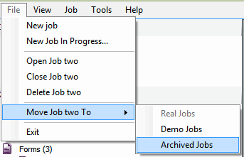
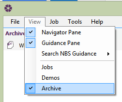

Archiving a Job |
When a job is complete and it no longer needs to be displayed in the Jobs list, it can be archived.
There are 2 ways to archive a job:

Go to View > Archives. This will list all of the jobs that are archived. Please Note: when a job is archived, the 'Output' folder will still hold all of the issued PDF files.

To reverse this, select the job in the archived list then go to File, Move <Job Title> To > Real Jobs
See also:
Active Jobs
Viewing Jobs
Output Location
Frequently Asked Questions